| 修行之旅途 | |||
|---|---|---|---|
| AP20 | 羁绊:735 | 经验:18,888 | QP:9,880 |
| BATTLE 1/3 |
争斗 Lv.40(狂)HP 25,844 |
争斗 Lv.40(狂)HP 25,844 |
争斗 Lv.39(狂)HP 20,368 |
| BATTLE 2/3 |
争斗 Lv.43(狂)HP 30,989 |
七头长耳天马 Lv.42(枪)HP 52,165 |
争斗 Lv.42(狂)HP 30,029 |
| BATTLE 3/3 |
七头长耳天马 Lv.38(枪)HP 77,177 |
七头长耳天马 Lv.45(枪)HP 104,549 |
|
| 战利品 | 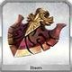 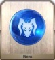 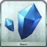 | ||
| 信仰虔诚的小镇 | |||
|---|---|---|---|
| AP20 | 羁绊:735 | 经验:18,888 | QP:9,880 |
| BATTLE 1/3 |
争斗 Lv.39(狂)HP 20,368 |
争斗 Lv.37(狂)HP 18,437 |
争斗 Lv.38(狂)HP 18,918 |
| BATTLE 2/3 |
迦楼罗 Lv.30(术)HP 52,757 |
争斗 Lv.42(狂)HP 25,069 |
争斗 Lv.40(狂)HP 23,856 |
| BATTLE 3/3 |
迦楼罗 Lv.40(术)HP 70,395 |
争斗 Lv.50(狂)HP 37,110 |
[影]威廉·退尔 Lv.70(弓)HP 116,375 |
| 战利品 | 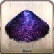 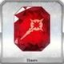 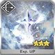 | ||
| 冥想的石窟 | |||
|---|---|---|---|
| AP20 | 羁绊:755 | 经验:20,056 | QP:10,140 |
| BATTLE 1/3 |
争斗 Lv.41(狂)HP 20,410 |
争斗 Lv.40(狂)HP 19,880 |
|
| BATTLE 2/3 |
争斗 Lv.45(狂)HP 33,501 |
娑罗摩 Lv.35(杀)HP 47,073 |
争斗 Lv.45(狂)HP 33,501 |
| BATTLE 3/3 |
娑罗摩 Lv.48(杀)HP 70,991 |
争斗 Lv.52(狂)HP 45,062 |
娑罗摩 Lv.55(杀)HP 106,893 |
| 战利品 | 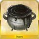 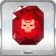 | ||
| 悟道的山巅 | |||
|---|---|---|---|
| AP21 | 羁绊:755 | 经验:20,056 | QP:10,140 |
| BATTLE 1/3 |
亡者 Lv.50(狂)HP 17,140 |
亡者 Lv.51(狂)HP 17,494 |
亡者 Lv.50(狂)HP 17,140 |
| BATTLE 2/3 |
摩诃那伽 Lv.25(枪)HP 111,078 |
||
| BATTLE 3/3 |
亡者 Lv.65(狂)HP 42,931 |
[影]哪吒 Lv.74(狂)HP 124,718 |
亡者 Lv.62(狂)HP 41,055 |
| 战利品 | 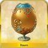 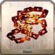 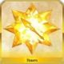 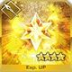 | ||
| 祈祷的广场 | |||
|---|---|---|---|
| AP21 | 羁绊:775 | 经验:21,256 | QP:10,400 |
| BATTLE 1/3 |
争斗 Lv.39(狂)HP 21,338 |
争斗 Lv.41(狂)HP 22,451 |
争斗 Lv.43(狂)HP 23,509 |
| BATTLE 2/3 |
争斗 Lv.44(狂)HP 37,150 |
争斗 Lv.45(狂)HP 40,201 |
达温 Lv.29(骑)HP 52,746 |
| BATTLE 3/3 |
达温 Lv.37(骑)HP 80,847 |
达温 Lv.47(骑)HP 111,294 |
|
| 战利品 | 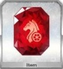 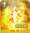 | ||
| 壁之村 | |||
|---|---|---|---|
| AP21 | 羁绊:775 | 经验:21,256 | QP:10,400 |
| BATTLE 1/3 |
争斗 Lv.43(狂)HP 32,058 |
争斗 Lv.40(狂)HP 29,820 |
争斗 Lv.40(狂)HP 29,820 |
| BATTLE 2/3 |
争斗 Lv.46(狂)HP 41,067 |
争斗 Lv.44(狂)HP 39,335 |
争斗 Lv.45(狂)HP 40,201 |
| BATTLE 3/3 |
摩诃那伽 Lv.40(枪)HP 175,857 |
||
| 战利品 | |||
| 恶魔的地盘 | |||
|---|---|---|---|
| AP21 | 羁绊:795 | 经验:22,488 | QP:10,660 |
| BATTLE 1/3 |
争斗 Lv.35(狂)HP 23,591 |
争斗 Lv.36(狂)HP 24,240 |
争斗 Lv.37(狂)HP 24,889 |
| BATTLE 2/3 |
争斗 Lv.46(狂)HP 35,363 |
争斗 Lv.46(狂)HP 35,363 |
争斗 Lv.46(狂)HP 35,363 |
| BATTLE 3/3 |
争斗 Lv.50(狂)HP 56,902 |
争斗众 Lv.52(狂)HP 107,374 |
争斗 Lv.51(狂)HP 58,118 |
| 战利品 | 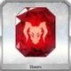 | ||
| 被治愈的小镇 | |||
|---|---|---|---|
| AP21 | 羁绊:795 | 经验:22,488 | QP:10,660 |
| BATTLE 1/3 |
亡者 Lv.46(狂)HP 15,858 |
亡者 Lv.47(狂)HP 16,178 |
亡者 Lv.48(狂)HP 16,500 |
| BATTLE 2/3 |
亡者 Lv.49(狂)HP 25,230 |
亡者 Lv.51(狂)HP 26,241 |
亡者 Lv.50(狂)HP 25,710 |
| BATTLE 3/3 |
争斗众 Lv.48(狂)HP 100,155 |
[影]阿斯克勒庇俄斯 Lv.70(术)HP 121,008 |
亡者 Lv.60(狂)HP 50,950 |
| 战利品 | |||
| 大龙的床铺 | |||
|---|---|---|---|
| AP21 | 羁绊:815 | 经验:23,752 | QP:10,920 |
| BATTLE 1/3 |
迦楼罗 Lv.31(术)HP 43,742 |
迦楼罗 Lv.30(术)HP 40,095 |
|
| BATTLE 2/3 |
摩诃那伽 Lv.25(枪)HP 113,357 |
||
| BATTLE 3/3 |
迦楼罗 Lv.50(术)HP 70,427 |
[影]马嘶 Lv.80(弓)HP 140,562 |
|
| 战利品 | |||
| 天界 | |||
|---|---|---|---|
| AP21 | 羁绊:815 | 经验:23,752 | QP:10,920 |
| BATTLE 1/3 |
迦楼罗 Lv.26(术)HP 36,617 |
迦楼罗 Lv.25(术)HP 34,242 |
|
| BATTLE 2/3 |
迦楼罗 Lv.32(术)HP 46,393 |
伊夫利塔 Lv.33(术)HP 73,683 |
|
| BATTLE 3/3 |
迦楼罗 Lv.40(术)HP 62,574 |
迦楼罗 Lv.39(术)HP 61,021 |
伊夫利塔 Lv.47(术)HP 101,377 |
| 战利品 | 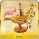 | ||